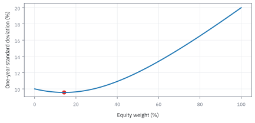
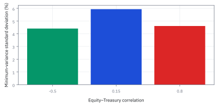
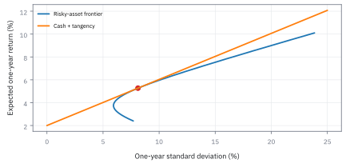
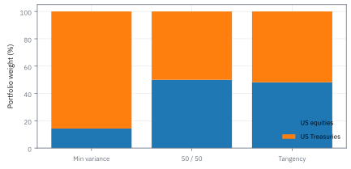
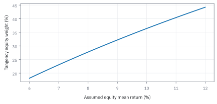
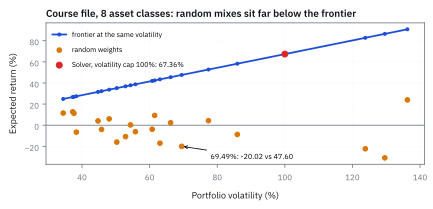

17.3 Markowitz Portfolio Theory
ความเสี่ยงของพอร์ตมาจาก covariance ไม่ใช่ค่าเฉลี่ยของความเสี่ยงรายตัว ใส่ของเสี่ยงนิดหนึ่งจึงทำให้พอร์ตนิ่งขึ้นได้ และส่วนผสมที่ดีที่สุดขึ้นกับค่าเฉลี่ยที่ประมาณมาอย่างน่ากลัว
มีเงิน \$10 ล้าน แบ่งระหว่างหุ้น (คาดหวัง 9% ต่อปี ความผันผวน 20%) กับพันธบัตร (3.5% และ 6%) correlation 0.15 เงินสดได้ 2% คนแรกบอกว่าอยากเสี่ยงน้อยที่สุดก็ถือพันธบัตรล้วน เสี่ยง 6% คนที่สองบอกว่าหุ้นมี Sharpe ratio 0.35 (ส่วนเกินเงินสด 7% หารด้วยความผันผวน 20%) ดีกว่าพันธบัตรที่ 0.25 (1.5% หารด้วย 6%) อยากได้ Sharpe สูงสุดก็ถือหุ้นล้วน ใครถูก?
ลองตอบก่อนเปิดเฉลย
ผิดทั้งคู่ ใส่หุ้น 4.5% (\$450,000) ความผันผวนลดเหลือ 5.93% ต่ำกว่าพันธบัตรล้วน ทั้งที่หุ้นแกว่งกว่าสามเท่า และพอร์ตหุ้น 32.19% (\$3,218,884) พันธบัตร 67.81% ได้ Sharpe 0.4030 สูงกว่าหุ้นล้วน 15.1% เพราะสองตัวนี้ขึ้นลงไม่พร้อมกัน
สิ่งที่เราจะสร้าง
12.5 สร้างเครื่องมือไว้แล้ว: Lagrangian ของพอร์ต เส้น efficient frontier จาก $A,B,C,D$ และพอร์ต tangency เมื่อมีเงินสด ส่วน 17.2 เพิ่งจบที่ขนาด Kelly $\Sigma^{-1}(\mu-r\mathbf1)$ ซึ่งชี้ทิศเดียวกัน หน้านี้เอาเครื่องมือชุดนั้นมาใช้กับโจทย์และไฟล์ของคอร์ส แล้วถามว่าคำตอบเชื่อได้แค่ไหน
เริ่มจากประกอบ covariance แล้วหาพอร์ตเสี่ยงต่ำสุดของสองสินทรัพย์ด้วยมือ ดูว่า correlation เปลี่ยนคำตอบอย่างไร เขียนเป็น matrix หาพอร์ต tangency และค่าของการกระจาย ดูว่าคำตอบไวต่อค่าเฉลี่ยแค่ไหน ขยายเป็นสามสินทรัพย์ของ Assignment 1 และจบที่ไฟล์แปดกลุ่มสินทรัพย์ของคอร์ส
ศัพท์ที่ใช้ในหัวข้อนี้
- Mean-variance
- กรอบเลือกพอร์ตที่ดูแค่สองตัวเลข คือผลตอบแทนคาดหวังกับ variance ของพอร์ต ใช้เพราะทั้งสองคิดได้จาก $\mu$ และ $\Sigma$ ด้วยพีชคณิต matrix ล้วน (8.2)
- Minimum-variance portfolio
- พอร์ตที่น้ำหนักรวมเป็นหนึ่งและ variance ต่ำที่สุด ใช้แค่ $\Sigma$ ไม่ต้องรู้ค่าเฉลี่ยเลย จึงเป็นพอร์ตที่ประมาณได้นิ่งที่สุด
- Efficient frontier
- ชุดพอร์ตที่ให้ผลตอบแทนคาดหวังสูงสุดที่แต่ละระดับความผันผวน พอร์ตที่อยู่ใต้เส้นแพ้พอร์ตบนเส้นเสมอ
- Tangency portfolio
- ส่วนผสมของสินทรัพย์เสี่ยงที่ Sharpe ratio สูงสุด เป็นจุดที่เส้นจากเงินสดแตะ frontier พอดี
- One-fund theorem
- ภายใต้ mean-variance ที่ใช้ค่าเฉลี่ยและ covariance เดียวกัน ไม่มีข้อจำกัดน้ำหนัก และกู้หรือฝากได้ที่อัตราเดียวกัน ผู้ลงทุนต่างความเกลียดความเสี่ยงจะใช้ส่วนผสมเสี่ยงเดียวกัน แล้วปรับสัดส่วนกับเงินสด
- Sharpe ratio
- ผลตอบแทนส่วนเกินเงินสดหารด้วยความผันผวน ใช้เทียบความคุ้มของความเสี่ยงหนึ่งหน่วย (3.5)
สัญลักษณ์และหน่วย
| สัญลักษณ์ | ความหมาย | หน่วย |
|---|---|---|
| $w$ | vector น้ำหนักของสินทรัพย์เสี่ยง | สัดส่วนของทุน |
| $w_E,\ w_B$ | น้ำหนักหุ้น และน้ำหนักพันธบัตร | สัดส่วน |
| $\mathbf1$ | vector ที่ทุกช่องเป็น 1 | ไม่มีหน่วย |
| $\mu$ | vector ผลตอบแทนคาดหวังรายปี | สัดส่วนต่อปี |
| $r_f$ | ดอกเบี้ยเงินสด | สัดส่วนต่อปี |
| $\Sigma$ | covariance matrix รายปี | สัดส่วนกำลังสอง |
| $\sigma_E,\ \sigma_B,\ \sigma_p$ | ความผันผวนของหุ้น พันธบัตร และพอร์ต | สัดส่วนต่อปี |
| $\rho$ | correlation ของหุ้นกับพันธบัตร | ไม่มีหน่วย |
| $A$ | $\mathbf1^{\mathsf T}\Sigma^{-1}\mathbf1$ (12.5) | ต่อสัดส่วนกำลังสอง |
| $B$ | $\mathbf1^{\mathsf T}\Sigma^{-1}\mu$ | ต่อสัดส่วน |
| $C$ | $\mu^{\mathsf T}\Sigma^{-1}\mu$ | ไม่มีหน่วย |
| $D$ | $AC-B^2$ ตัวหารของสูตร frontier | ต่อสัดส่วนกำลังสอง |
| $m$ | ผลตอบแทนคาดหวังที่ตั้งเป้า | สัดส่วนต่อปี |
| $\gamma$ | ระดับความกลัวความเสี่ยง (risk aversion) | ไม่มีหน่วย |
| $u$ | $\Sigma^{-1}(\mu-r_f\mathbf1)$ ทิศของพอร์ต tangency ก่อนปรับให้รวมเป็นหนึ่ง | เท่าของทุน |
ขั้นที่ 1 — ประกอบ covariance แล้วลองพอร์ตครึ่งต่อครึ่ง
โจทย์ให้ความผันผวนรายตัวกับ correlation มา สูตรทุกสูตรต่อจากนี้ใช้ covariance matrix จึงต้องประกอบก่อน แล้วลองพอร์ตที่ง่ายที่สุด 50/50 กับ correlation สามค่า เพื่อดูว่า variance ของพอร์ตมาจากไหน (8.2)
ช่องนอกแนวทแยงคือ correlation คูณความผันผวนทั้งสอง ไม่ใช่ correlation เฉย ๆ ส่วน $\sigma_p^2$ คือ $w^{\mathsf T}\Sigma w$ ที่กางออก พจน์ไขว้ $2w_Ew_B\rho\sigma_E\sigma_B$ เป็นตัวเดียวที่ correlation เข้าไปมีส่วน ที่ 50/50 สองก้อนแรกคือ $0.25(0.04)=0.0100$ กับ $0.25(0.0036)=0.0009$ และพจน์ไขว้คือ $0.006\rho$
คงน้ำหนักและความผันผวนของสองสินทรัพย์ไว้ เปลี่ยนเฉพาะ correlation ถ้า $\rho=1$ พอร์ตมีความผันผวน 13% ถ้า $\rho=-1$ เหลือ 7% ส่วนกรณี $\rho=0.15$ ของโจทย์ได้ 10.86% ต่ำกว่ากรณีขึ้นลงพร้อมกัน 2.14 จุดเปอร์เซ็นต์ นี่คือผลของ covariance ในการคำนวณ ไม่ใช่การลดความผันผวนของแต่ละสินทรัพย์
ขั้นที่ 2 — พอร์ตเสี่ยงต่ำสุดด้วยมือ
ถ้าน้ำหนักรวมต้องเป็นหนึ่ง $w_B=1-w_E$ variance เป็นพาราโบลาของตัวแปรเดียว หาจุดต่ำสุดด้วย derivative ได้เลย กางวงเล็บทุกก้อนก่อน จะเห็นว่าแต่ละสัมประสิทธิ์มาจากไหน
ก้อน $w_E^2$ รวมได้ $0.04+0.0036-0.0036=0.04$ ก้อน $w_E$ รวมได้ $-0.0072+0.0036=-0.0036$ สัมประสิทธิ์หน้า $w_E^2$ เป็นบวก จุดที่ความชันศูนย์จึงเป็นจุดต่ำสุด หุ้น 4.5% พันธบัตร 95.5% ผลตอบแทนคาดหวัง $0.045(9\%)+0.955(3.5\%)=3.75\%$
ความผันผวน 5.93% ต่ำกว่าพันธบัตรล้วน 6% ทั้งที่ใส่หุ้นที่แกว่ง 20% เข้าไป ความชันที่ $w_E=0$ คือ $-0.0036$ ติดลบ แปลว่าหุ้นก้อนแรกลด variance เพราะวันที่พันธบัตรลง หุ้นไม่ได้ลงตามเสมอ
Figure 17.3a — ถือหุ้นบางส่วนกลับเสี่ยงต่ำกว่าพันธบัตรล้วน

แกนนอนคือน้ำหนักหุ้น 0 ถึง 100% (ที่เหลือเป็นพันธบัตร) แกนตั้งคือความผันผวนหนึ่งปีของพอร์ต เส้นเริ่มที่ 6% (พันธบัตรล้วน) ลงไปต่ำสุดที่จุดแดง หุ้น 4.5% ความผันผวน $\sqrt{0.003519}=5.93\%$ แล้วขึ้นไปถึง 20% ที่หุ้นล้วน
ขั้นที่ 3 — correlation สูงไม่ได้แปลว่ากระจายไม่ได้
ทำขั้นที่ 2 ซ้ำด้วยสัญลักษณ์ เพื่อดูว่าน้ำหนักของพอร์ตเสี่ยงต่ำสุดขึ้นกับ $\rho$ อย่างไร แล้วลองสามค่า สัญชาตญาณบอกว่า correlation ยิ่งสูง การกระจายยิ่งช่วยน้อย ขั้นนี้แสดงว่าจริงแค่ครึ่งเดียว
แทนน้ำหนักกลับเข้าไปใน $\sigma_p^2$ ได้ความผันผวนต่ำสุด 4.41% ที่ $\rho=-0.5$ และ 6.00% ที่ $\rho=0.3$ ซึ่งคือพันธบัตรล้วน เพราะที่ $\rho=\sigma_B/\sigma_E=0.3$ หุ้นก้อนแรกไม่ช่วยและไม่ทำร้าย
ที่ $\rho=0.8$ คำตอบคือ short หุ้น 24.59% แล้วถือพันธบัตร 124.59% ความผันผวนลงไปเหลือ 4.61% ต่ำกว่าที่ $\rho=0.15$ เสียอีก เมื่อสองตัวขึ้นลงพร้อมกันมาก หุ้นกลายเป็นเครื่องมือ hedge ของพันธบัตร
ความเสี่ยงต่ำสุดจึงสูงที่สุดตรงกลาง ($\rho=0.3$) ไม่ใช่ที่ correlation สูง แต่ถ้าห้าม short (12.6) คำตอบที่ $\rho=0.8$ คือพันธบัตรล้วน 6%
Figure 17.3b — ผลของ correlation เมื่ออนุญาตให้ short

คงความผันผวนสินทรัพย์ที่ 20% กับ 6% แล้วเปลี่ยน correlation แท่งเขียว น้ำเงิน แดงคือพอร์ตเสี่ยงต่ำสุดที่ $\rho=-0.5$, 0.15, 0.8 สูง 4.41%, 5.93% และ 4.61% ตามลำดับ
แท่งแดงต่ำกว่าแท่งกลางเพราะอนุญาตให้ short หุ้น 24.59% เพื่อหักล้างการขยับของพันธบัตร หากห้าม short กรณี $\rho=0.8$ จะเลือกพันธบัตรล้วน ความผันผวน 6% ไม่ใช่ 4.61%
ขั้นที่ 4 — เขียนเป็น matrix: พอร์ตเสี่ยงต่ำสุดกับพอร์ต tangency
เมื่อมีหลายสินทรัพย์ การเขียนเป็น matrix ช่วยใช้วิธีเดียวกันได้ทุกขนาด ตัวอย่างนี้ให้ $\Sigma$ เป็นบวกแน่นอน จึงกลับด้วยสูตร 2×2 ของ 7.5 ได้ แล้วแก้โจทย์ของ 12.5: ถือ $w$ ในสินทรัพย์เสี่ยง ที่เหลือเป็นเงินสด ทำ $U(w)$ ให้สูงสุด โดยยังไม่มีข้อจำกัด short หรือ leverage
ตัวหาร 0.00014076 คือ $\det\Sigma=0.04(0.0036)-0.0018^2$ บรรทัด $\Sigma w=\lambda\mathbf1$ มาจาก Lagrangian ของ variance กับข้อบังคับเดียว (12.4): ความชันของ variance ต้องชี้ทิศเดียวกับข้อบังคับ แก้ได้ $w=\lambda\Sigma^{-1}\mathbf1$ แล้วใช้ $\mathbf1^{\mathsf T}w=1$ หา $\lambda=1/A$ variance ที่จุดนั้นคือ $1/A=0.003519$ ตรงกับขั้นที่ 2
หาร $w^*$ ด้วยผลรวมของมันเอง ตัว $1/\gamma$ อยู่ทั้งเศษและส่วนจึงตัดกัน ผลรวมเป็นบวกในตัวอย่างนี้ จึงได้ส่วนผสมเสี่ยงที่รวมเป็นหนึ่ง
เมื่อใช้ค่าเฉลี่ยและ covariance ชุดเดียวกัน ไม่มีข้อจำกัดน้ำหนัก และกู้หรือฝากได้ที่อัตราเดียวกัน ความเกลียดความเสี่ยงจะเปลี่ยนสัดส่วนเงินสด แต่ไม่เปลี่ยนส่วนผสมเสี่ยงนี้ นี่คือ one-fund theorem ไม่ใช่คำแนะนำว่าผู้ลงทุนที่มีสมมติฐานหรือข้อจำกัดต่างกันต้องถือพอร์ตเดียวกัน
ขั้นที่ 5 — พอร์ต tangency ของ \$10 ล้าน
โจทย์ให้อะไรมาบ้าง: $\Sigma^{-1}$ จากขั้นที่ 4 และผลตอบแทนส่วนเกินเงินสด $9\%-2\%=7\%$ ของหุ้น และ $3.5\%-2\%=1.5\%$ ของพันธบัตร แทนลงในบรรทัดสุดท้ายของขั้นที่ 4: คูณ $\Sigma^{-1}$ แล้วหารด้วยผลรวม
คำตอบ: ทั้ง $u_1$ และ $u_2$ เป็นบวก จึงไม่ต้อง short หุ้นได้ 32.19% คือ \$3,218,884 พันธบัตร 67.81% คือ \$6,781,116 ผลตอบแทนคาดหวัง 5.27% ความผันผวน 8.12% Sharpe 0.4030 สามก้อนของ variance คือหุ้น พันธบัตร และพจน์ไขว้ ตามลำดับเดียวกับขั้นที่ 1
พันธบัตรได้น้ำหนักมากทั้งที่ Sharpe ต่ำกว่าหุ้น เพราะมันแกว่งน้อย และ correlation ต่ำทำให้มันหักความผันผวนของหุ้นได้มากกว่าผลตอบแทนที่เสียไป
ตรวจเองใน 10 วินาที: $1.5985+3.3674=4.9659$ และ $1.5985/4.9659=0.3219$ ส่วน $(5.27-2)/8.12=0.403$
ขั้นที่ 6 — การกระจายมีค่าเท่าไร และสูตรตรวจ Sharpe
เทียบ Sharpe ของพอร์ต tangency กับสินทรัพย์เดี่ยวที่ดีที่สุด แล้วเขียน Sharpe สูงสุดด้วย $A,B,C$ ซึ่งใช้ตรวจงานได้โดยไม่ต้องหาน้ำหนัก เริ่มจาก $w_{\text{tan}}=u/\mathbf1^{\mathsf T}u$ และ $\Sigma u=\mu-r_f\mathbf1$
ตัวหาร $\mathbf1^{\mathsf T}u$ ตัดกันระหว่างเศษและส่วนของ Sharpe และ $u^{\mathsf T}\Sigma u=u^{\mathsf T}(\mu-r_f\mathbf1)$ เพราะ $\Sigma u$ คือส่วนเกินพอดี กางผลคูณออกได้ $A,B,C$ ของ 12.5 ด้วย $B=10.6493$ และ $C=0.474709$ ผลตรงกับขั้นที่ 5
บรรทัดสุดท้ายคือถือพอร์ต tangency 2.46 เท่าด้วยเงินกู้ที่ 2% ให้ความผันผวนเท่าหุ้นล้วน 20% ได้ผลตอบแทนคาดหวัง 10.06% แทน 9% ที่ความผันผวนเป้าหมายเดียวกัน ส่วนต่างคาดหวังคือ 1.06 จุดต่อปี ไม่ใช่กำไรที่รับรอง โดยสมมติว่ากู้ได้ที่ดอกเบี้ยเดียวกับเงินฝาก
Figure 17.3c — Frontier และเส้นผสมเงินสด

แกนนอนคือความผันผวนหนึ่งปี แกนตั้งคือผลตอบแทนคาดหวัง เส้นโค้งคือส่วนผสมหุ้น −20% ถึง 120% (ช่วงนอก 0 ถึง 100% คือ short) แขนบนของมันคือ efficient frontier เส้นตรงเริ่มจาก 2% ที่ความผันผวนศูนย์ แตะเส้นโค้งที่จุดแดง (8.12%, 5.27%) ความชันของมันคือ Sharpe 0.4030 ส่วนที่ต่อเลยจุดแดงไปคือการกู้ที่ 2%
Figure 17.3d — เปรียบเทียบส่วนผสมที่ส่งเป็นเงินได้

แท่งซ้อนของน้ำหนัก ส่วนล่างคือหุ้น ส่วนบนคือพันธบัตร: พอร์ตเสี่ยงต่ำสุด 4.5/95.5 พอร์ต 50/50 และพอร์ต tangency 32.19/67.81 แต่ละแท่งรวม 100% คูณ \$10 ล้านเป็นคำสั่งซื้อได้ตรง ๆ พอร์ตแรกใช้แค่ $\Sigma$ พอร์ตสุดท้ายใช้ทั้ง $\Sigma$ และ $\mu$
ขั้นที่ 7 — ค่าเฉลี่ยผิดนิดเดียว น้ำหนักขยับเท่าไร
9% ของหุ้นเป็นค่าประมาณ 3.3 เคยแสดงว่าค่าเฉลี่ยจากข้อมูลย้อนหลังคลาดได้หลายจุดง่าย ๆ ลองเปลี่ยนค่าเฉลี่ยของหุ้นโดยตรึง $\Sigma$ ไว้ แล้วคิดน้ำหนักหุ้นของพอร์ต tangency ใหม่ด้วยขั้นที่ 4
ค่าเฉลี่ยของหุ้นคลาด 1 จุด น้ำหนักหุ้นขยับราว 4.3 จุด คือเงินราว \$430,000 จาก \$10 ล้าน ย้ายข้างเพราะความคลาดของตัวเลขตัวเดียว ในสองสินทรัพย์ยังพอรับได้ แต่ $\Sigma^{-1}$ ของสินทรัพย์หลายตัวที่คล้ายกันมีทิศที่ variance เล็กมาก ความคลาดในทิศนั้นถูกขยายจนน้ำหนักสุดโต่ง ขั้นที่ 10 จะเห็นกับไฟล์จริง
Figure 17.3e — เปลี่ยนค่าเฉลี่ยแล้วน้ำหนักขยับ

แกนนอนคือค่าเฉลี่ยหุ้นที่สมมติ 6 ถึง 12% (100 จุด) แกนตั้งคือน้ำหนักหุ้นของพอร์ต tangency โดย $\Sigma$ พันธบัตร 3.5% และเงินสด 2% คงเดิม เส้นขึ้นจาก 18.14% ถึง 44.22% ความชันราว 4.3 จุดต่อจุดรอบ 9% และค่อย ๆ ลดลงทางขวา
ขั้นที่ 8 — สามสินทรัพย์ของ Assignment 1
ไฟล์ Assignment 1 ให้สามสินทรัพย์ ค่าเฉลี่ย 6%, 2% และ 4% covariance เป็น 0.002 คูณ matrix เลขจำนวนเต็ม และเงินสด 1% (แผ่นแรกของ Assignment 2) ดึงตัวคูณ 0.002 ออกก่อน matrix ที่เหลือกลับด้วยมือได้ แล้วใช้สูตรของขั้นที่ 4 ตรง ๆ
$M$ คือ matrix เลขจำนวนเต็ม determinant ของมันคือ 8 และ matrix ตัวที่สามคือ adjugate ของมัน (คูณกลับกับ $M$ ได้ 8 เท่าของ identity) ตัวคูณหน้าจึงเป็น $1/0.016=62.5$ คิดด้วยมือได้ทั้งหมด
พอร์ตเสี่ยงต่ำสุดถือตัวที่สองถึงสองในสาม เพราะมันแกว่งน้อยที่สุดและเคลื่อนสวนตัวอื่น ได้ค่าเฉลี่ย $B/A=3\%$ พอร์ต tangency มีค่าเฉลี่ย 3.4167% ความผันผวน 2.8382% และ Sharpe 0.8515 บรรทัดสุดท้ายใช้ผลของขั้นที่ 6 ว่า $\mathrm{SR}^2=u^{\mathsf T}(\mu-r_f\mathbf1)$
น้ำหนักเริ่มต้นในไฟล์สุ่มจากระฆังมาตรฐาน (0.9367, −0.4118, −0.1267) รวมกันได้แค่ 0.3982 จึงยังไม่ผ่านข้อบังคับ เป็นแค่จุดออกเดินของ Solver ไม่ใช่พอร์ตที่ใช้ได้
ขั้นที่ 9 — เพดานความผันผวน 5%: มีเงินสดกับไม่มีเงินสด
โจทย์ถามผลตอบแทนสูงสุดที่ความผันผวนไม่เกิน 5% ถ้ามีเงินสด คำตอบอยู่บนเส้นจากเงินสดผ่านพอร์ต tangency ถ้าไม่มี คำตอบอยู่บนแขนบนของ frontier ซึ่งต้องแก้ $\sigma^2=(Am^2-2Bm+C)/D$ ของ 12.5 หา $m$
สูตรรากเลือกเครื่องหมายบวกเพราะต้องการแขนบน และใช้ $B^2-AC=-D$ ทำให้ในรากเหลือ $D(A\sigma^2-1)$
ไม่มีเงินสด ได้ผลตอบแทนคาดหวัง 4.51% ด้วยน้ำหนัก 62.1%, 36.4% และ 1.5% ถ้ากู้ได้ที่อัตราเงินสด จะถือพอร์ต tangency 1.76 เท่าแล้วกู้ 76% ได้ผลตอบแทนคาดหวัง 5.26% สูงขึ้นประมาณ 0.74 จุดที่ความผันผวนเป้าหมายเดียวกัน ทั้งหมดเป็นผลของแบบจำลอง
ช่องเพดานในไฟล์ตั้งไว้ 85.94% ถ้าใช้ค่านั้นโดยให้ short ได้ไม่จำกัด สูตรเดียวกันให้ 33.37% ด้วยน้ำหนัก 928%, −541% และ −287% เพดานที่หลวมเกินไปก็คือไม่มีเพดาน
ขั้นที่ 10 — ไฟล์แปดกลุ่มสินทรัพย์: คำตอบที่ถูกทางคณิตแต่เทรดไม่ได้
ไฟล์ Excel ของคอร์สมีแปดกลุ่ม: พันธบัตรสหรัฐฯ พันธบัตรต่างประเทศ หุ้นสหรัฐฯ สี่กลุ่ม (ใหญ่และเล็ก แบบโตและแบบคุณค่า) หุ้นประเทศพัฒนาแล้ว และหุ้นตลาดเกิดใหม่ ค่าเฉลี่ยในไฟล์ (%) คือ 3.15, 1.75, −6.39, −2.86, −6.75, −0.54, −6.75 และ −5.26 เงินสด 1.5% ไฟล์คำนวณ $z=V^{-1}\hat\mu$ ให้ $\mathbf1^{\mathsf T}z=1{,}364.93$, $z_1=1{,}700.78$ และผลตอบแทนส่วนเกินของพอร์ต 4.2267% ที่เหลือคิดจากสามตัวนี้
$s^*$ ถือพันธบัตรสหรัฐฯ 124.61% และ short หุ้นประเทศพัฒนาแล้ว 33.56% ในไฟล์ ค่าเฉลี่ยของหุ้นเกือบทุกกลุ่มติดลบ optimizer จึงเชื่อตัวเลขนั้นตรง ๆ แล้ว short หุ้นเพื่อซื้อพันธบัตรเกินทุน
ไฟล์ใช้ค่าเฉลี่ยเป็นเปอร์เซ็นต์แต่ $V$ เป็นทศนิยม $z$ จึงดูใหญ่ การหารด้วย $\mathbf1^{\mathsf T}z$ ตัดหน่วยทิ้ง $s^*$ จึงถูก และเพราะ $Vz=\hat\mu$ variance ของพอร์ตจึงเป็นผลตอบแทนส่วนเกินหารด้วย $\mathbf1^{\mathsf T}z$ ได้ความผันผวน 5.5647% ตรงกับไฟล์ โดยไม่ต้องเห็น $V$ เลย
บรรทัด $\beta$ คือการตรวจในไฟล์: เพราะ $Vs^*$ ชี้ทิศเดียวกับ $\hat\mu$ beta ของแต่ละกลุ่มเทียบพอร์ต tangency คูณผลตอบแทนส่วนเกินของพอร์ตได้ผลตอบแทนส่วนเกินของกลุ่มนั้นพอดี ($0.3904\times4.2267=1.65$) นี่คือโครงของ CAPM ใน 15.2
แผ่นที่สามให้นักลงทุนที่ $U=R_p-\tau\sigma_p^2$ กับ $\tau=1$ ($R_p$, $\sigma_p$ เป็นเปอร์เซ็นต์ $V_{\%}=10{,}000V$) คำตอบคือ $z/20{,}000$ ถือสินทรัพย์เสี่ยงรวม 6.82% เงินสด 93.18% หารน้ำหนักเสี่ยงด้วย 0.068246 ได้ $s^*$ เดิมทุกตัว ความผันผวน $0.068246(5.5647)=0.3798\%$ และ Sharpe 0.7595 เท่าเดิม นี่คือ one-fund theorem เป็นตัวเลข
Figure 17.3f — พอร์ตสุ่มกับ frontier ในไฟล์แปดกลุ่ม

ตัวเลข 21 คู่จากแผ่นที่สองของไฟล์ แกนนอนคือความผันผวน 34.43% ถึง 136.26% แกนตั้งคือผลตอบแทนคาดหวัง จุดส้มคือพอร์ตที่สุ่มน้ำหนัก เส้นน้ำเงินคือ frontier ที่ความผันผวนเท่ากัน เช่นที่ 69.49% พอร์ตสุ่มได้ −20.02% แต่ frontier ได้ 47.60% จุดแดงคือ Solver ที่เพดานความผันผวน 100% ได้ 67.36% ด้วยพันธบัตรสหรัฐฯ 568% และ short หุ้นประเทศพัฒนาแล้ว 865% จุดบน frontier ทั้ง 21 จุดและจุด Solver อยู่บนพาราโบลา $\sigma^2=am^2+bm+c$ เดียวกันภายใน 0.01 จุด ซึ่งเท่ากับขนาดของการปัดทศนิยมสองตำแหน่ง
คำถามที่ควรถามออกมาดัง ๆ
ทำไมพอร์ตเสี่ยงต่ำสุดไม่ต้องใช้ค่าเฉลี่ย? ข้อบังคับมีข้อเดียวคือรวมเป็นหนึ่ง ขั้นที่ 4 จึงมีแต่ $\Sigma$ จึงไม่ต้องป้อนค่าเฉลี่ยที่ประมาณเพิ่มเข้าไป แต่ covariance เองยังมีความไม่แน่นอนและต้องตรวจเช่นกัน (17.8)
ถ้าอยู่บน frontier ต้องคำนวณใหม่ทุกเป้าหมายไหม? ไม่ต้อง 12.5 แสดงว่าน้ำหนักบน frontier เป็นเส้นตรงใน $m$ พอร์ตบนเส้นทุกพอร์ตจึงเป็นส่วนผสมของสองพอร์ตบนเส้น เช่นพอร์ตเสี่ยงต่ำสุดกับพอร์ต tangency (two-fund separation)
ถ้าผลลัพธ์ขั้นที่ 10 ถูกทางคณิต ทำไมไม่เทรดตาม? เพราะค่าเฉลี่ยติดลบของหุ้นเป็นค่าประมาณจากข้อมูลไม่กี่ปี optimizer ไม่รู้ว่ามันไม่แน่นอน จึงวางเดิมพันเต็มที่ในทิศที่ข้อมูลอาจผิดมากที่สุด 17.8 และ 17.9 แก้เรื่องนี้
ความผิดที่ให้คำตอบผิดแบบเงียบ ๆ
เฉลี่ยความผันผวนตามน้ำหนัก: พอร์ต 50/50 ไม่ได้เสี่ยง $(20\%+6\%)/2=13\%$ ถ้า $\rho=0.15$ มันเสี่ยง 10.86% ตัวเลข 13% ถูกเฉพาะเมื่อ $\rho=1$
ใส่ correlation แทน covariance ในตาราง: ถ้าใส่ 0.15 ในช่องนอกแนวทแยงแทน 0.0018 จะได้ determinant $0.04(0.0036)-0.15^2=-0.022356$ ติดลบ ตารางนี้ไม่ใช่ covariance ที่เป็นไปได้ และ optimizer จะหาพอร์ตที่ “variance ติดลบ” ให้
เชื่อค่าเฉลี่ย: ค่าเฉลี่ยหุ้นคลาด 1 จุด น้ำหนักขยับราว 4.3 จุดในสองสินทรัพย์ และในไฟล์แปดกลุ่มได้พอร์ต 568% กับ −865% Michaud เรียก optimizer ว่า error maximizer เพราะมันเทน้ำหนักไปที่ตัวที่ค่าเฉลี่ยถูกประมาณสูงเกินที่สุด
ลืมว่าไม่ได้ห้าม short: คำตอบขั้นที่ 3 ที่ $\rho=0.8$ และขั้นที่ 9 ที่เพดาน 85.94% ต้อง short ถ้า mandate ห้าม ต้องใช้ KKT ของ 12.6 ไม่ใช่ตัดตัวที่ติดลบทิ้งแล้วปรับสัดส่วน
ใช้ทำอะไรบนโต๊ะจริง
ก่อนใช้น้ำหนักจริง ต้องตรวจทั้งค่าที่ป้อนและข้อจำกัด พอร์ตเสี่ยงต่ำสุดไม่ต้องใช้ $\mu$ แต่ยังไวต่อ $\Sigma$ และอาจสั่ง short ได้ ส่วนพอร์ตที่ใช้ $\mu$ มีความไม่แน่นอนของค่าเฉลี่ยเพิ่มอีก
เครื่องมือที่พิจารณาได้คือเพดานน้ำหนักและข้อจำกัด short (12.6), shrinkage ของ covariance (17.8) หรือการผสมพอร์ตอ้างอิงกับมุมมองแบบ Black–Litterman (17.9) แต่ละวิธีต้องใช้ให้ตรงกับโจทย์ ไม่ใช่แทนข้อจำกัดด้วยสูตรเปล่า
สามโจทย์ตรวจความเข้าใจ
1. สองสินทรัพย์ความผันผวน 30% และ 10% correlation ศูนย์ พอร์ตเสี่ยงต่ำสุดถือตัวแรกเท่าไร และเสี่ยงเท่าไร?
เฉลย
สูตรขั้นที่ 3 กับ $\rho=0$: $w=0.01/(0.09+0.01)=10\%$ variance $=0.09(0.01)+0.01(0.81)=0.0009+0.0081=0.009$ ความผันผวน 9.49% ต่ำกว่าตัวที่นิ่งกว่า (10%) แม้ไม่มี correlation ติดลบเลย
2. โจทย์ \$10 ล้านเดิม แต่เงินสดได้ 3% พอร์ต tangency เปลี่ยนเป็นอย่างไร?
เฉลย
ส่วนเกินเป็น (0.06, 0.005): $u_1=25.5754(0.06)-12.7877(0.005)=1.4706$ $u_2=-12.7877(0.06)+284.1716(0.005)=0.6536$ หารด้วย 2.1242 ได้หุ้น 69.23% พันธบัตร 30.77% Sharpe ยกกำลังสองคือ $C-0.06B+0.0009A$ $=0.474709-0.638960+0.255754=0.091503$ รากที่สองได้ 0.3025 เงินสดแพงขึ้น พันธบัตรที่ได้เหนือเงินสดแค่ 0.5% จึงเสียน้ำหนักให้หุ้น
3. Assignment 1 ถ้ามีเงินสด 1% และเพดานความผันผวน 5% ต้องถือแต่ละตัวเท่าไรของทุน?
เฉลย
ถือพอร์ต tangency $0.05/0.028382=1.7617$ เท่า: $1.7617(0.2917,\ 0.5833,\ 0.125)=(51.38\%,\ 102.76\%,\ 22.02\%)$ และเงินสด $-76.17\%$ คือกู้ ได้ $0.01+0.05(0.8515)=5.26\%$
คำนวณซ้ำด้วย JavaScript
โค้ดนี้แก้ระบบเชิงเส้นด้วย Gaussian elimination แทนการกลับ matrix หาพอร์ตเสี่ยงต่ำสุด พอร์ต tangency และสูตร frontier $A,B,C,D$ ของโจทย์สองสินทรัพย์และ Assignment 1 คิดผลของ correlation และค่าเฉลี่ยหุ้น และตัวเลขที่ได้จากผลรวมในไฟล์แปดกลุ่ม แล้วพิมพ์ออกมาหนึ่งบรรทัด
function num(name, x) {
if (typeof x !== 'number' || !Number.isFinite(x)) throw new TypeError(`${name} must be a finite number`);
return x;
}
function checkCov(S) {
if (!Array.isArray(S) || !S.length || S.some(r => !Array.isArray(r) || r.length !== S.length)) throw new TypeError('covariance must be a square matrix');
S.forEach((r, i) => r.forEach((x, j) => { num('covariance entry', x); if (Math.abs(x - S[j][i]) > 1e-15) throw new RangeError('covariance must be symmetric'); }));
return S;
}
const dot = (a, b) => a.reduce((s, x, i) => s + x * b[i], 0);
const times = (S, v) => S.map(r => dot(r, v));
// Solve S x = b by Gaussian elimination with partial pivoting (no explicit inverse).
function solve(S, b) {
const n = S.length, M = S.map((r, i) => [...r, b[i]]);
for (let c = 0; c < n; c++) {
let p = c;
for (let r = c + 1; r < n; r++) if (Math.abs(M[r][c]) > Math.abs(M[p][c])) p = r;
if (Math.abs(M[p][c]) < 1e-14) throw new RangeError('covariance is singular: some mix of assets has zero risk');
[M[c], M[p]] = [M[p], M[c]];
for (let r = c + 1; r < n; r++) { const f = M[r][c] / M[c][c]; for (let k = c; k <= n; k++) M[r][k] -= f * M[c][k]; }
}
const x = new Array(n).fill(0);
for (let r = n - 1; r >= 0; r--) x[r] = (M[r][n] - dot(M[r].slice(r + 1, n), x.slice(r + 1))) / M[r][r];
return x;
}
const stats = (S, mu, w) => ({w, mean: dot(w, mu), sd: Math.sqrt(dot(w, times(S, w)))});
// Minimum variance: w = S^-1 1 / A with A = 1' S^-1 1, and variance 1/A.
function minVariance(S, mu) {
const y = solve(checkCov(S), S.map(() => 1)), A = y.reduce((a, b) => a + b, 0);
return {...stats(S, mu, y.map(v => v / A)), A};
}
// Tangency: u = S^-1 (mu - rf 1), normalised so the weights add to 1 (risk aversion cancels).
function tangency(S, mu, rf) {
const u = solve(checkCov(S), mu.map(m => num('mu', m) - num('rf', rf)));
const total = u.reduce((a, b) => a + b, 0);
if (!(total > 0)) throw new RangeError('this tangency normalization requires a positive sum of unnormalized risky weights');
const s = stats(S, mu, u.map(v => v / total));
return {...s, u, total, sharpe: (s.mean - rf) / s.sd};
}
// Frontier without cash: A, B, C, D, and the top-arm return at a given volatility.
function frontier(S, mu) {
const y1 = solve(checkCov(S), S.map(() => 1)), ym = solve(S, mu);
const A = y1.reduce((a, b) => a + b, 0), B = dot(mu, y1), C = dot(mu, ym), D = A * C - B * B;
const weights = m => y1.map((v, i) => ((C - B * m) * v + (A * m - B) * ym[i]) / D);
const returnAt = sd => {
if (!(num('sd', sd) >= 1 / Math.sqrt(A))) throw new RangeError('volatility is below the minimum-variance portfolio');
return (B + Math.sqrt(D * (A * sd * sd - 1))) / A;
};
return {A, B, C, D, weights, returnAt};
}
// Two assets: stocks 9% / 20%, Treasuries 3.5% / 6%, correlation 0.15, cash 2%.
const sE = 0.20, sB = 0.06, rho = 0.15;
const S2 = [[sE * sE, rho * sE * sB], [rho * sE * sB, sB * sB]], mu2 = [0.09, 0.035];
const half = stats(S2, mu2, [0.5, 0.5]), mv2 = minVariance(S2, mu2), tan2 = tangency(S2, mu2, 0.02), f2 = frontier(S2, mu2);
const sweep = [1, 0.15, -1].map(r => Math.sqrt(0.25 * sE * sE + 0.25 * sB * sB + 0.5 * r * sE * sB));
const byRho = [-0.5, 0.15, 0.8].map(r => { const m = minVariance([[sE * sE, r * sE * sB], [r * sE * sB, sB * sB]], mu2); return {rho: r, stock: m.w[0], sd: m.sd}; });
const stockMean = [0.06, 0.08, 0.10, 0.12].map(m => tangency(S2, [m, 0.035], 0.02).w[0]);
// Assignment 1: three assets, covariance 0.002 times a small integer matrix, cash 1%.
const S3 = [[4, -1, 2], [-1, 1, -1], [2, -1, 4]].map(r => r.map(x => 0.002 * x)), mu3 = [0.06, 0.02, 0.04];
const mv3 = minVariance(S3, mu3), tan3 = tangency(S3, mu3, 0.01), f3 = frontier(S3, mu3);
const at5 = f3.returnAt(0.05), loose = f3.returnAt(0.8594);
// Course file, eight asset classes: only the file's sums are needed (z = V^-1 excess, mean excess in %).
const sumZ = 1364.93, z1 = 1700.78, excessS = 4.2267;
const sdS = Math.sqrt(excessS / sumZ); // s'Vs = s'excess / sum(z) because V z = excess
console.log(JSON.stringify({
half, sweep, mv2, byRho, tan2, sr2: f2.C - 0.04 * f2.B + 0.0004 * f2.A, ABCD2: [f2.A, f2.B, f2.C, f2.D],
leverTo20: 0.20 / tan2.sd, returnAt20: 0.02 + 0.20 * tan2.sharpe, stockMean,
mv3, tan3, ABCD3: [f3.A, f3.B, f3.C, f3.D], at5, w5: f3.weights(at5), cash5: 0.01 + 0.05 * tan3.sharpe, lever5: 0.05 / tan3.sd,
loose, wLoose: f3.weights(loose),
file: {s1: z1 / sumZ, sdS, sharpe: excessS / 100 / sdS, x1: z1 / 20000, risky: sumZ / 20000, Rp: 1.5 + sumZ / 20000 * excessS,
sdP: sumZ / 20000 * sdS * 100, beta1: (1.65 / sumZ) / (sdS * sdS)}
}));ที่มาที่ไป
ก่อนปี 1952 ตำราการลงทุนสอนให้เลือกหลักทรัพย์ที่มูลค่าคิดลดสูงสุด Harry Markowitz ถามว่าถ้าอย่างนั้นทำไมทุกคนกระจายเงิน แล้วเสนอในบทความ Portfolio Selection (1952) ให้วัดความเสี่ยงของพอร์ตด้วย variance ที่มาจาก covariance ของทุกคู่ James Tobin เพิ่มสินทรัพย์ปลอดความเสี่ยงในปี 1958 และอธิบายการแยกส่วนผสมเสี่ยงจากสัดส่วนเงินสดภายใต้สมมติฐานร่วมกัน และ Richard Michaud ในปี 1989 เรียก optimizer ว่า error maximizer จากปัญหาในขั้นที่ 7 และ 10
ข้อจำกัด: วิธีนี้สมมติอะไร และของจริงเป็นอย่างไร
| สมมติอะไร | ของจริง | ผลเวลาใช้งาน |
|---|---|---|
| รู้ $\mu$ และ $\Sigma$ | ประมาณจากข้อมูลย้อนหลัง $\mu$ คลาดง่ายมาก | น้ำหนักขยับราว 4.3 จุดต่อ 1 จุดของค่าเฉลี่ย และสุดโต่งเมื่อมีหลายตัว |
| ความผันผวนคือความเสี่ยง | คนกลัวขาดทุน ไม่กลัววันที่ขึ้นแรง และหางไม่ใช่ระฆัง | ต้องดู ES ของ 17.1 ประกอบ |
| ตัดสินใจครั้งเดียว ไม่มีต้นทุน | ต้องปรับพอร์ตต่อเนื่องและเสียค่าซื้อขาย | ใช้แบบมีต้นทุนของ 12.8 |
| short และกู้ได้ที่ดอกเบี้ยเงินฝาก | มีข้อห้ามและดอกเบี้ยกู้สูงกว่า | คำตอบเปลี่ยน ต้องใช้ KKT (12.6) |
สิ่งที่ควรตอบได้หลังอ่าน
- พอร์ต 50/50 เสี่ยง 10.86% ไม่ใช่ 13% เพราะพจน์ไขว้ของ covariance
- พอร์ตเสี่ยงต่ำสุด (หุ้น 4.5%) เสี่ยง 5.93% ต่ำกว่าพันธบัตรล้วน และใช้แค่ $\Sigma$: $w=\Sigma^{-1}\mathbf1/A$ variance $1/A$
- correlation สูงมากทำให้ใช้ตัวหนึ่ง hedge อีกตัวได้: ที่ 0.8 short หุ้น 24.59% เสี่ยงเหลือ 4.61%
- พอร์ต tangency $\Sigma^{-1}(\mu-r_f\mathbf1)$ ปรับให้รวมเป็นหนึ่ง: หุ้น 32.19% Sharpe 0.4030 และ $\mathrm{SR}^2=C-2r_fB+r_f^2A$
- ค่าเฉลี่ยคลาด 1 จุดย้ายน้ำหนักราว 4.3 จุด และไฟล์แปดกลุ่มให้ 568% กับ −865% คำตอบถูกทางคณิตแต่เทรดไม่ได้
17.4 ดูอีกด้านของ $\Sigma$: เมื่อสินทรัพย์หลายตัวขยับไปด้วยกันแน่น matrix แปดมิติอาจมีทิศสำคัญจริงแค่สามทิศ และทิศที่ variance เล็กคือทิศที่ $\Sigma^{-1}$ ขยายความคลาดเคลื่อน